The Axim Missions outreach was a powerful demonstration of God’s love, grace, and faithfulness. Over five impactful days, missionaries and evangelists stepped out in faith to share the Gospel, reach local communities, minister to individuals, and establish a lasting presence for the work of the Kingdom of God.
The mission was more than an outreach programme: it was a divine assignment to carry the message of salvation to the people of Axim and its surrounding communities. Through evangelism, personal encounters, prayer, and the preaching of God’s Word, hearts were touched, souls were won for Christ, and the name of the Lord was glorified.
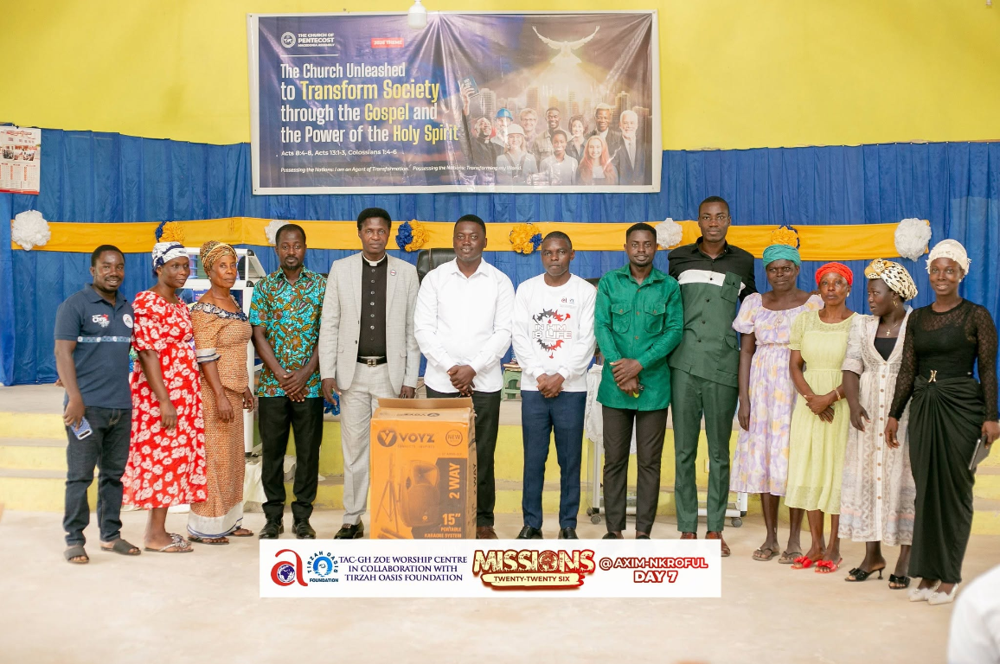
Day 1: Setting Out in Faith
The mission began with a heart of expectation and a commitment to fulfil the Great Commission. The team entered the mission field with one purpose: to make Christ known and share the hope of salvation with those who needed to hear the Gospel.
With prayer, unity, and a readiness to serve, the missionaries embraced the task ahead, trusting God to lead their steps and prepare hearts for His Word. Day 1 marked the beginning of a journey of faith, service, and divine encounters.
Day 2: Taking the Gospel to the People
As the mission progressed, the team engaged with local people through personal evangelism and community outreach. Missionaries took time to interact with individuals, listen to their concerns, and share the life-changing message of Jesus Christ.
Each encounter created an opportunity for meaningful conversation, prayer, and the proclamation of the Gospel—a reminder that every soul matters to God and that evangelism calls for compassion, patience, and genuine love for people.
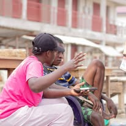
Day 3: Hearts Touched and Souls Won
By the third day, the mission continued with renewed passion and determination. The team pressed forward, trusting the Holy Spirit to work through every conversation, every prayer, and every message shared.
The highlight of the mission was the salvation of souls. People were reached with the Gospel and given the opportunity to respond to the message of Christ. These moments reminded the team that missions are not merely about visiting communities, but about seeing people encounter Jesus and begin a new journey of faith.
“There is joy in the presence of the angels of God over one sinner that repenteth.”Luke 15:10 · KJV
Day 4: Establishing a Lasting Presence
A significant achievement of the outreach was the establishment of two local mission bases or ministry groups, providing a foundation for continued engagement with the communities. These local works create opportunities for fellowship, discipleship, follow-up, and the nurturing of those who have received the Gospel.
Missions do not end when a visiting team leaves the field. The hope is that seeds planted during the outreach will continue to grow, bear fruit, and reach more people for Christ.
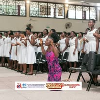
Day 5: Celebrating God’s Faithfulness
The fifth and final day was a moment to reflect on the journey, celebrate the victories, and give all glory to God. The preaching of the Word, the dedication of the missionaries, and the response of the people all formed part of a memorable mission experience.
As the outreach drew to a close, the team could look back with gratitude for the opportunities to serve, the souls saved, and the two local establishments that would help sustain the work. Every step taken, every word spoken, and every life touched pointed back to the faithfulness of the Lord.
The Impact of Axim Missions
The five-day outreach recorded meaningful achievements that will remain an encouragement to the team and all who supported the mission:
- Five days of dedicated outreach: the Gospel was carried into local communities through evangelism and personal ministry.
- Souls saved: people were reached with the message of salvation through Jesus Christ.
- Two local establishments: a foundation was laid for the continuation of mission work beyond the outreach.
- God glorified: through the preaching of the Word, the service of the missionaries, and the fruit of the mission, all praise and honour were given to God.
These achievements remind us that the success of a mission is measured not only by the number of days spent in the field, but by the lives touched, the souls won, and the lasting work established for the Kingdom.
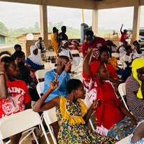
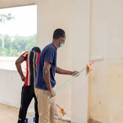
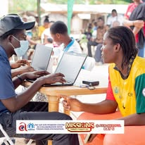
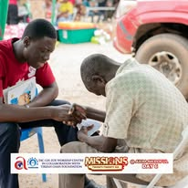
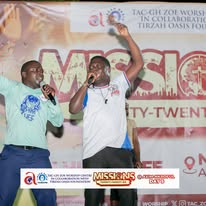
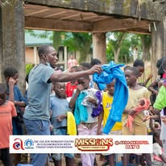
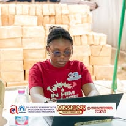
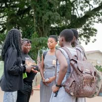
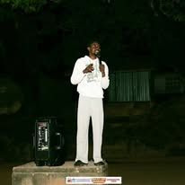
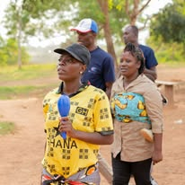
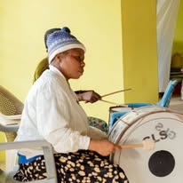
A Call to Continue the Work
The conclusion of the Axim Missions outreach is not the end of the assignment. It is the beginning of another chapter of service, discipleship, and community engagement. The two local establishments must be nurtured, new believers encouraged in their faith, and the Gospel continued in the communities reached.
The missionaries may return from the field, but the mandate remains: to preach Christ, make disciples, and take the message of salvation to every nation and community.
“Go ye therefore, and teach all nations… teaching them to observe all things whatsoever I have commanded you.”Matthew 28:19–20 · KJV
All Glory to God!
From Day 1 to Day 5, the Axim Missions outreach was a testimony of faith in action, souls won for Christ, and a foundation established for continued ministry. We give thanks to God for the strength to serve, the grace to preach the Gospel, the lives reached, and the two local establishments that mark an important step forward in the mission field.
May the seeds planted during these five days continue to grow. May the souls reached remain steadfast in Christ, and may the local works flourish as channels of hope and salvation to many more.
Axim Missions 2026 — Five Days in the Field, Lives Touched, Souls Saved, Two Local Establishments, and All Glory to God!
“Not unto us, O LORD, not unto us, but unto thy name give glory, for thy mercy, and for thy truth’s sake.”Psalm 115:1 · KJV